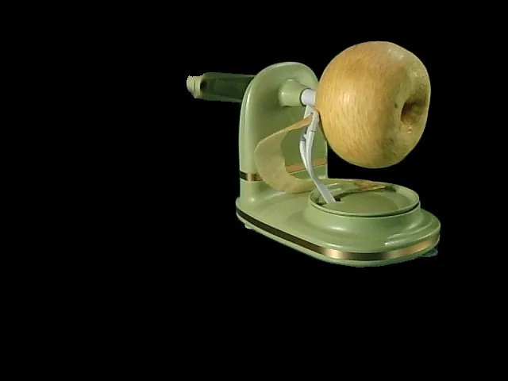
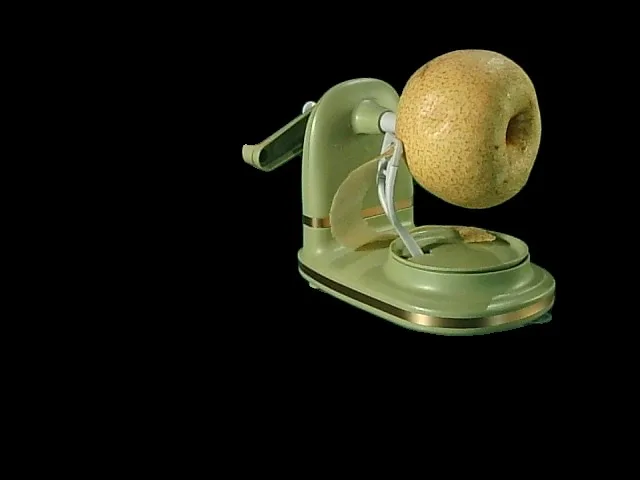
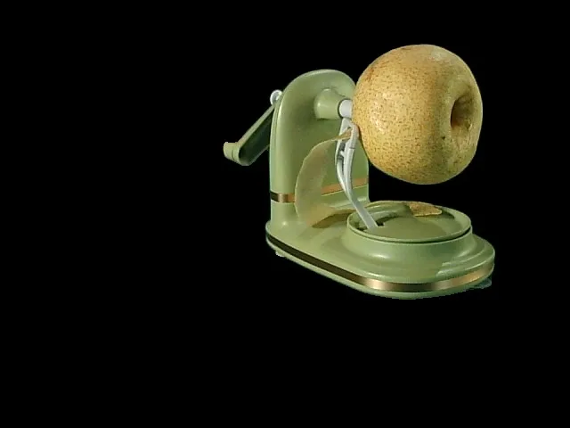
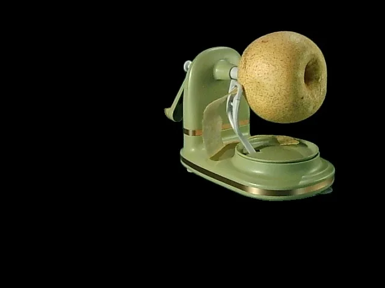

HAT-4D：通过人机协作从单目视频提升 4D 多物体交互HAT-4D: Lifting Monocular Video for 4D Multi-Object Interactions via Human-Agent Collaboration
贴合单目 3D/4D 重建、动态场景理解和具身数据生成；虽不是 SLAM 系统，但对地图资产与交互数据构建有潜在价值。
一句话工作总结
面向单目视频的 4D 多物体交互重建数据引擎，可作为机器人/具身学习中低成本获取动态 3D 资产的候选路线。
摘要
从海量野外单目视频中恢复动态 4D 物体交互，可为具身智能和 VLA 训练提供可扩展数据，但现有单目 4D 重建常聚焦孤立物体，在多物体遮挡和复杂交互中失败。HAT-4D 是一个 agentic 框架，结合 VLM 与多层级 human-in-the-loop 反馈，在 3D 生成和 4D 传播阶段处理深度歧义、遮挡和交互约束，从单视频恢复多物体几何、时间动态和物理交互。作者还构建 MVOIK-4D 开放世界基准，并用物理合理性和时间一致性指标评估。
Extracting dynamic 4D object interactions from massive, in-the-wild monocular videos offers a highly efficient data collection pathway for scaling Embodied AI and training VLAs. However, existing monocular 4D reconstruction methods primarily focus on isolated objects, often failing under the severe occlusions and complex dynamics inherent in multi-object interactions. To bridge this gap, we propose HAT-4D, the first agentic framework designed to reconstruct the 3D geometry, temporal dynamics, and physical interactions of multiple objects from a single video. By integrating VLMs with a multi-level human-in-the-loop feedback mechanism, HAT-4D efficiently resolves depth ambiguities and interaction-induced occlusions during 3D generation and 4D propagation, yielding physically plausible assets without relying on expensive multicamera rigs. As a scalable data engine, HAT-4D facilitates the creation of MVOIK-4D, an open-world benchmark for monocular 4D interaction reconstruction, accompanied by a novel multi-dimensional evaluation protocol focused on physical plausibility and temporal consistency. Extensive experiments demonstrate that HAT-4D achieves SOTA performance on most evaluation metrics, while maintaining competitive semantic alignment. Ablation studies show that introducing a small amount of human feedback improves interaction reconstruction. Moreover, the data produced by HAT-4D effectively improves baseline performance when used for fine-tuning. Our data and code are available at https://lijiaxin0111.github.io/HAT4D/
中文解读摘录
- 为什么看：面向从普通单目视频构建动态 4D 多物体交互资产，适合作为具身智能/机器人训练数据引擎观察。
- 方法要点：结合 VLM、agentic pipeline 和多层级 human-in-the-loop 反馈，在 3D 生成与 4D 传播阶段处理深度歧义、遮挡和交互约束。
- 结果信号：提出 MVOIK-4D benchmark，并强调物理合理性、时间一致性等多维评估；数据和代码已给出项目页。
- 跟踪建议：关注其对相机运动、尺度、遮挡恢复和物理接触的假设；若能稳定生成动态 3D 资产，可补充机器人仿真场景库。
- 链接：abs · PDF · 项目页：https://lijiaxin0111.github.io/HAT4D/
图表/页面预览

{kind=link}

{kind=link}
{kind=link}

{kind=link}

{kind=link}
